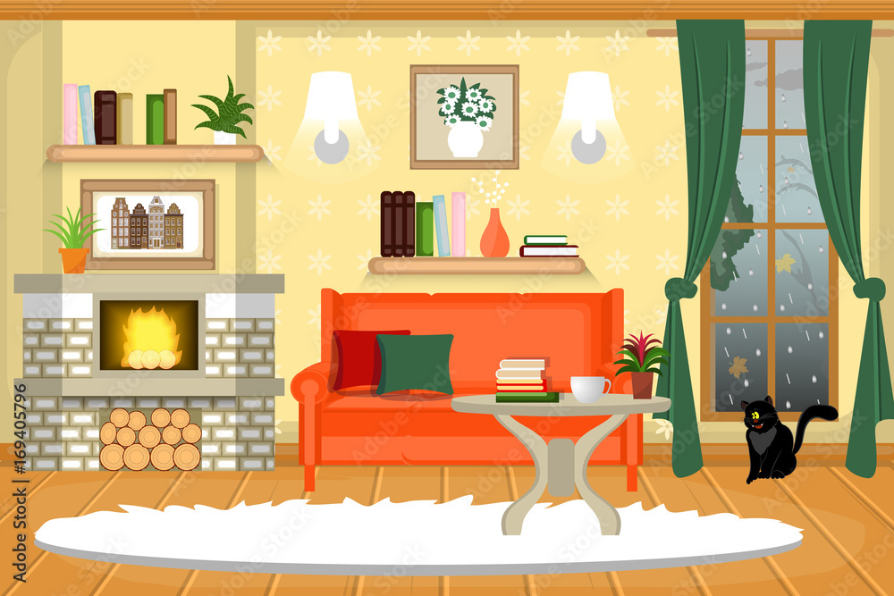
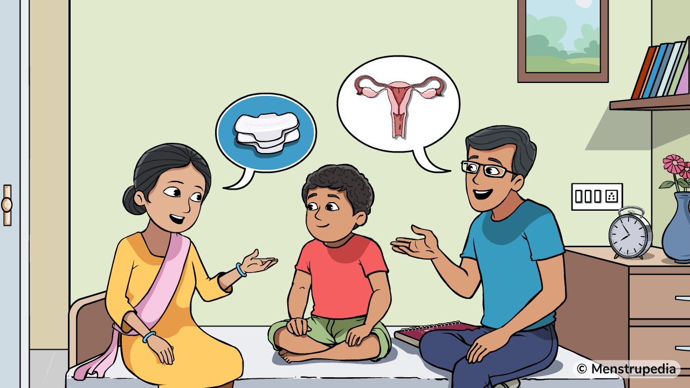
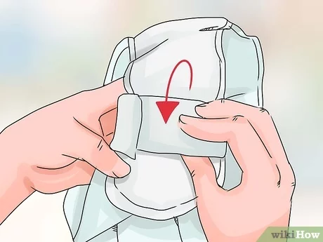
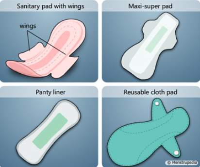
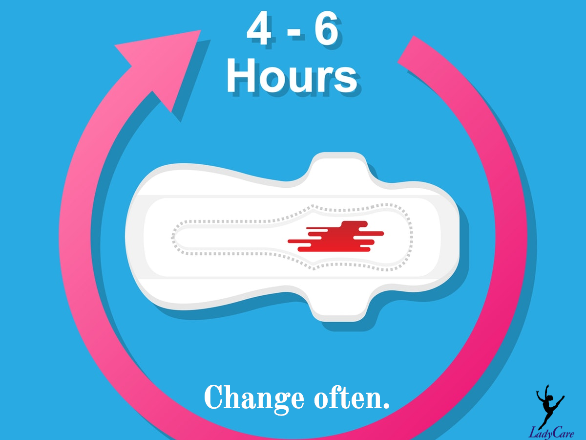
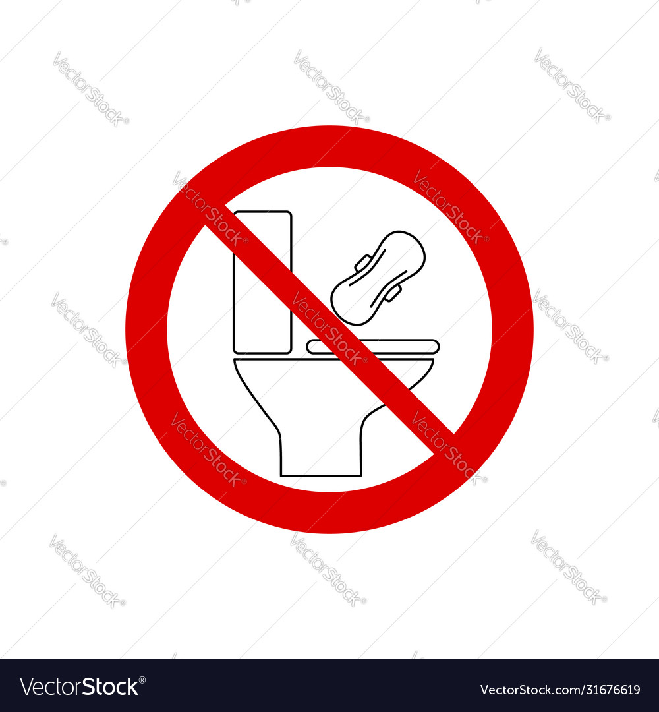

Teaching a female family member, especially a younger one, about menstrual hygiene and how to use a sanitary napkin is an important and supportive task.
Here are some steps you can follow:


Find a quiet and comfortable place where you can have a private conversation without interruptions.
Choose a time when you both are relaxed and not rushed.
Begin the conversation in a casual manner to make her feel at ease. You can say , "I noticed you're growing up, and there are some things about taking care of your body that we should talk about."
Provide a simple and clear explanation of menstruation. You can say, "Every month, a woman's body goes through a natural process called menstruation. It's a normal part of growing up and becoming a woman.".
Emphasize the importance of maintaining good menstrual hygiene to stay healthy. Explain that using sanitary napkins is one way to manage menstruation.
Choose the Right Time and Place
Introduce the Topic Casually
Explain Menstruation:
Discuss Menstrual Hygiene

Introduce her to the different types of sanitary napkins available in the market, such as regular, overnight, or panty liners. Explain their purposes and when to use each type.
Designed for reliable comfort, sanitary napkins without wings offer effective absorbency without the additional side flaps.
Explain the importance of changing sanitary napkins regularly, typically every 4-6 hours, to prevent discomfort and maintain hygiene.
Let her know that it's okay to have questions and encourage her to ask anything she's curious about. Make her feel comfortable discussing this topic with you.
Show Different Types of Sanitary Napkins
Demonstrate How to Use a Sanitary Napkin
Discuss Changing Intervals
Encourage Questions



Discuss the proper way to dispose of used sanitary napkins. Remind her not to flush them down the toilet and to use the provided disposal methods.
Let her know that menstruation is a normal and natural process, and reassure her that it's something every woman experiences. Offer ongoing support and encouragement.
Address Disposal
Reassure and Support